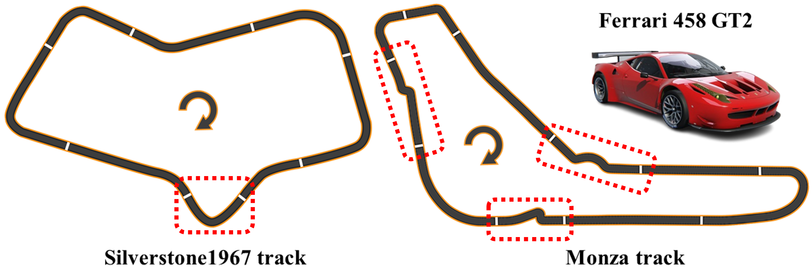
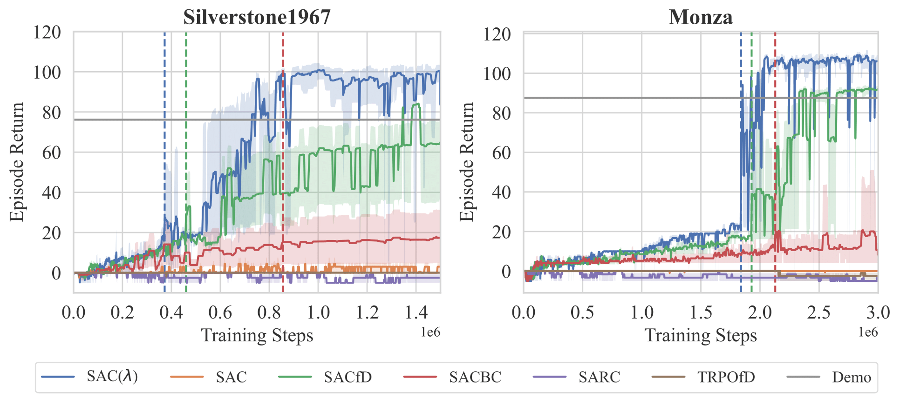
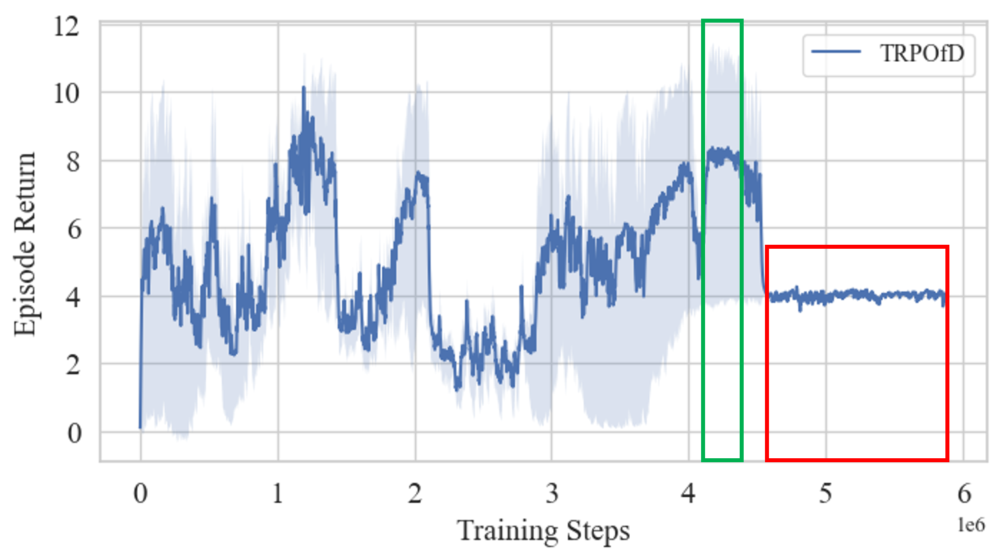
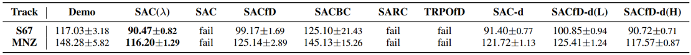

Recent advances in Reinforcement Learning (RL) have shown that end-to-end controllers can achieve promising results in autonomous racing, but sparse rewards and slow sample collection in environments like Assetto Corsa pose significant challenges for efficient learning. Prior works have used dense rewards and multiple machines to mitigate these issues, but such approaches often constrain the agent to path-tracking behaviors, limiting long-term planning. In this work, we propose SAC($\lambda$), a novel RL from Demonstration (RLfD) algorithm tailored for sparse reward settings. Built upon Soft Actor-Critic (SAC), SAC($\lambda$) augments the Q-function with a discriminator trained using Positive-Unlabeled (PU) learning, enabling effective utilization of imperfect demonstrations while mitigating overfitting. Experimental results show that SAC($\lambda$) significantly improves training efficiency and achieves superior lap times compared to existing methods, even surpassing the provided demonstrations.
Approach
The above figure shows an overview of SAC($\lambda$). Based on the original SAC algorithm (green shaded box), additional value from the discriminator is augmented to the original Q-function (red dotted box). The objective of discriminator is formulated as a positive-unlabeled learning problem, and is learned using given low-quality and narrow-distributed demonstrations.
Experimental setup

We consider the lap completion task in car racing, which aims to achieve minimum lap-time.
Ferrari 458 GT2 is used as our racing car and evaluate on two tracks: Silverstone1967 (S67) and Monza (MNZ). The red dotted boxes
indicate sections requiring advanced driving strategies
Interfacing framework is built meticulously using AC APIs.
Overall flow is shown in the figure above.
Firstly, necessary data such as vehicle velocity, acceleration,
and contact flags are collected using supported APIs.
A real-time data parser then passes those data into
our virtual RL environment, along with additional track data.
The route manager parses local map data such as preview
curvatures, slopes, and bank angles, and a 2D rangefinder is implemented.
The agent interacts with this virtual environment and generates
actions, which are then passed through
the virtual gamepad to transfer the control inputs to AC.
We also provide a random initial spawn function.
We set the task which posseses following key challenges :
Sparse reward : Tasks which require long and precise sequence of actions to successfully finish, designed as a sparse reward problems.
Slow sample collection speed : Unable to fast-forward or duplicate the environment on a single machine.
Imperfect demonstrations : Given demonstrations are sub-optimal and narrowly distributed.
Our goal is to show that SAC(\lambda) can effectively utilize the given imperfect demonstrations to guide exploration and achieve better performance than existing methods in the long-horizon and sparse reward tasks, specifically autonomous racing.
Result
We present the experimental results to address the following questions:
Training efficiency : How much does SAC($\lambda$) accelerate the early stages of learning?
Final Performance : Does SAC($\lambda$) achieve superior performance after sufficient training steps?
Learned Behavior : Is the behavior learned by the agent qualitatively comparable to that of a human expert driver?
Effect of $\lambda$ : How does the choice of $\lambda$ affect the entire
learning process?
Training Efficiency

Training efficiency is compared with the standard of the
required training steps until the agent completely finish a
lap, and the result it shown in the figure above.
Our approach exhibits the best performance in two aspects: required training steps
and the episode return at that steps. This indicates that the
DAQ-SAC effectively utilizes the given demonstrations to
accelerate the learning process. Notably, the IL-based algorithms
fail to learn how to drive, highlighting the difficulty
of generalization without the agent’s online exploration.

TRPO Best model before collapse
TRPO Local minima after collapse
Final Performance

SAC(λ)
Demonstration
SACfD
SACBC
SAC-d
SACfD-d(L)
SACfD-d(H)
Above table shows the comparison of the best lap times
achieved after sufficient training steps. The lap time
for demonstrations indicates the average lap time among the
existing data. Our approach achieves the fastest lap time
of 1:29.767 and maintains higher speeds in all sections
compared to the best performance of the demonstrations
Learned Behavior
Straight
Chicane
Sweeper
Corners
Kink
Esses
The above figure shows the agent’s trajectory
for achieving the minimum lap time, with three corners of
varying curvatures selected for detailed visualization. The
agent effectively uses the full width of the track to minimize
the curvature of its path and maximize speed, following
an ”out-in-out” trajectory—a technique commonly used by
expert human drivers. By learning this optimal strategy, the
agent attains higher speeds through these curve sections,
resulting in improved overall performance.